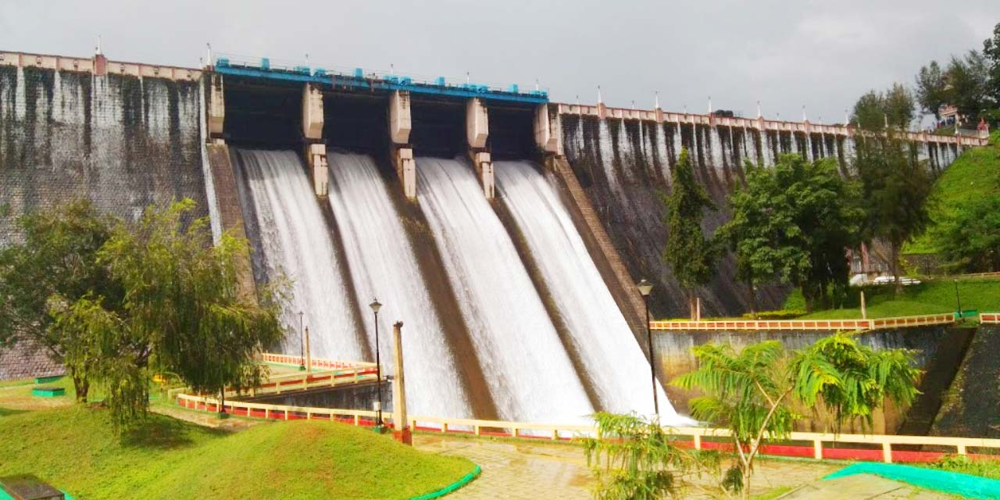

Sree Padmanabhaswamy Temple
The Padmanabhaswamy temple
is a Hindu temple located in Thiruvananthapuram,
the state capital of Kerala, India.
The name of the city of Thiruvananthapuram
in Malayalam translates to "The City of Lord Ananta",
referring to the deity of the Padmanabhaswamy temple.
The name of the city of Thiruvananthapuram in Malayalam
translates to "The City of Lord Ananta", (The City Of Lord Vishnu)
referring to the deity of the Padmanabhaswamy temple. The temple is built
in an intricate fusion of the Chera style and the Dravidian style of architecture,
featuring high walls, and a 16th-century gopura.[2][3] While the Ananthapura temple
at Kumbla in Kasaragod is considered the original seat of the deity ("Moolasthanam"),
architecturally to some extent
, the temple is a replica of the Adikesava Perumal temple in Thiruvattar.[
Kovalam Beach

Kovalam is a small coastal town in
the southern Indian state of Kerala,
south of Thiruvananthapuram.
At the southern end of Lighthouse Beach
is a striped lighthouse with a viewing platform.
At the southern end of Lighthouse Beach is a striped
lighthouse with a viewing platform. Palm-backed beaches
also include Hawa Beach and Samudra Beach. Heading south,
Vizhinjam Juma Masjid mosque overlooks the busy fishing harbor. Inland,
Sagarika Marine Research Aquarium displays technology used in pearl production.
Sree Chitra Art Gallery
Sree Chitra Art Gallery is an art gallery
in Thiruvananthapuram, India,
established in 1935. It is located
towards the northern side of the Napier Museum.
It was inaugurated by Chithira Thirunal Balarama Varma.
The gallery features a unique collection of traditional
and contemporary paintings, including the works of Raja Ravi Varma,
Nicholas Roerich, Svetoslav Roerich, Jamini Roy, Rabindranath Tagore,
V. S. Valiathan, C. Raja Raja Varma, and K. C. S. Paniker.
There are approximately 1100 paintings at the gallery.
The art gallery has on display works from the Mughal, Rajput,
Bengal, Rajastani, and Tanjore schools of art.[1][2] It also has an oriental
collection of Chinese, Japanese, and Balinese paintings, Tibetan Thangka,
and unique collections of Indian mural paintings from pre-historic times.
Other items of interest include miniatures from different
parts of the world, reproductions of murals of Ajanta, Bagh,
Sigiriya, and Sittannavasal, and manuscripts of archival
importance.[4][5][6] The gallery houses
400-year-old Tanjore miniature paintings.
Neyyar Wildlife Sanctuary

The Neyyar Wildlife Sanctuary in the
southern state of Kerala in India is spread
over the southeast corner of the Western Ghats,
and covers a total area of 128 km².
It is located between 77° 8’ to 77° 17’ east longitude
and 8° 29’ to 8° 37’ north latitude, central location 8°33′N 77°12.5′E.
Although it was declared as a sanctuary in 1958, not much was done
about wildlife conservation, until 1985, when a separate wildlife
wing was set up and as a result, conservation
efforts have gathered momentum. It is part of
the Agasthyamala Biosphere Reserve.[1]
Veli Lake
The Veli Tourist Village which lies
where the Veli Lake meets the Arabian
Sea provides for unique boating and picnicking
opportunities. Visitors can hire pedal boats or
paddleboats as per their convenience. One can also roam the
gardens and have a nice picnic or choose to employ the
boats for the entire duration of the trip. The view and feel of
the place is extremely unique, considering it is merely
12 kms from the capital city of Thiruvananthapuram.
Children are known to have a lot of fun climbing
the sculptures here and the speedboat ride across the waters
. A separate Children’s Park and
Floating Cafe run by Kerala Tourism
Development Corporation (KTDC) are added
incentives to visit this unique village.